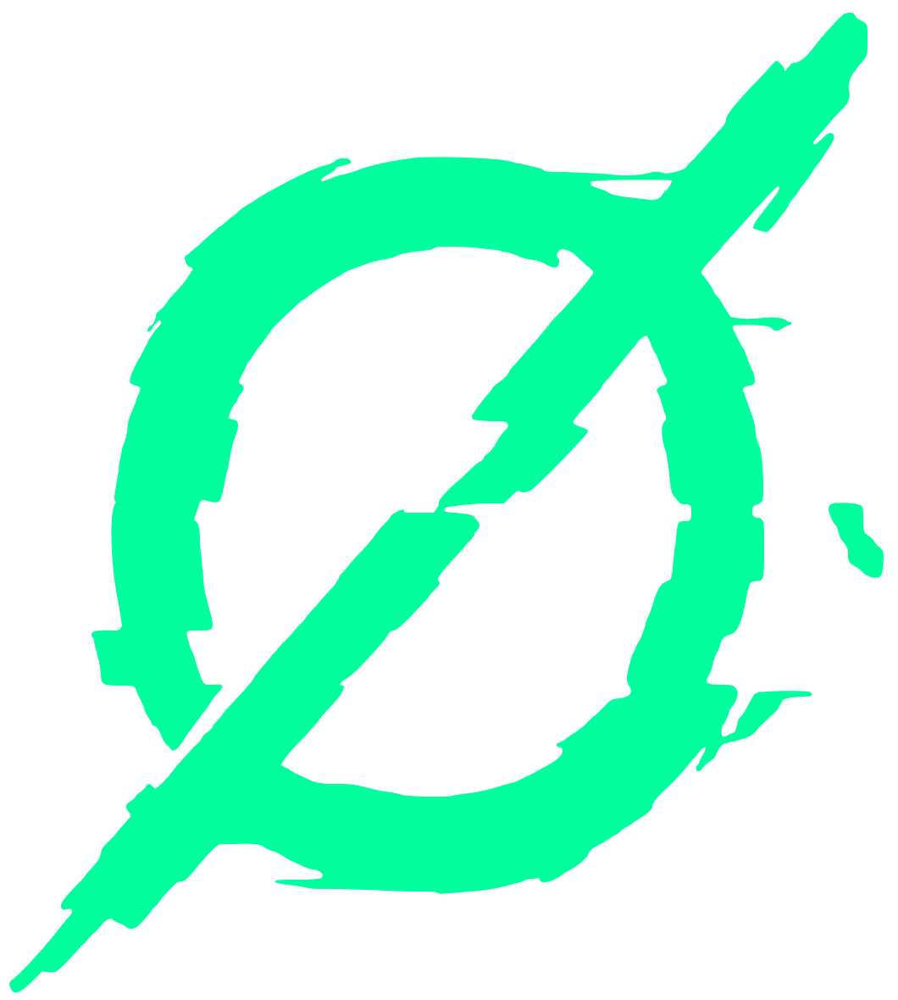

DESARROLLO
Ideas que se convierten en soluciones
- Páginas web
- Sistemas web
- Aplicaciones móviles
- Aplicaciones de escritorio
- Integración y gestión de bases de datos
- Dashboards y visualización de datos
WEB DEVELOPER
Dos espadas: una para crear, otra para cazar bugs.

FEB 2026-Actual
Desarrollo y diseño UI (Figma) del sistema interno corporativo creando SPAs dinámicas. Implementación de un módulo de gestión de flujos de trabajo para el monitoreo y seguimiento de tareas interdepartamentales, además del desarrollo de un sistema seguro para el control de calibración. De manera transversal, brindo soporte a la infraestructura física de red, abarcando configuración y cableado de servidores, nodos y cámaras de seguridad.
OCT 2023 - JUL 2025
Despliegue de arquitecturas FullStack y automatización vía WhatsApp, reduciendo llamadas de soporte en un 60%. Optimización de pipelines CI/CD con Rust para ahorro de costes y desarrollo de aplicaciones móviles multiplataforma con React Native, Supabase y Zustand.
ENE 2023 - JUN 2023
Monitoreo de infraestructura de red y soporte técnico especializado. Colaboré en el diseño técnico y conexión para la remodelación de laboratorios de redes, además de apoyar en el desarrollo del sistema web de inventariado para la gestión de activos tecnológicos.
Pagina para consultar y descargar facturas de auto refacciones Franco
Página para consulta de menú y hacer pedidos en línea.
Sitio para la concientización de los estereotipos que se tienen o se generan con las personas de la tercera edad.
Soy Ingeniero en TICS con una especialidad que define todo lo que hago: Diseño de Aplicaciones Web. Para mí, desarrollar no es solo escupir código; es diseñar soluciones que realmente funcionen, priorizando siempre la claridad y la estructura de los datos.
Llevo más de 3 años en el mundo del software, moviéndome entre el desarrollo FullStack y la ingeniería de sistemas. Me gusta ensuciarme las manos con lenguajes de alto rendimiento como Rust y Go, pero siempre mantengo el foco en el usuario final. Un ejemplo de esto fue cuando implementé un agente de WhatsApp que logró reducir el 60% de las llamadas de soporte; no fue solo programar, fue entender dónde estaba el cuello de botella y solucionarlo.
Mi formación técnica comenzó como programador desde el bachillerato y se consolidó con la ingeniería, lo que me permite tener una visión completa: desde configurar redes y dar soporte a infraestructura, hasta construir apps móviles con React Native y Supabase o acelerar flujos de trabajo en CI/CD.
No me conformo con lo que ya sé. Soy un entusiasta del aprendizaje continuo porque en este mundo, si no evolucionas, te quedas atrás. Mi meta es simple: ser un mejor desarrollador hoy de lo que fue ayer, entregando software escalable, limpio y eficiente.
Ingeniería en Tecnologías de la Información y Comunicación
Especialidad: Diseño de Aplicaciones Web
Técnico en Programación
Rust, Go, Java, JS, SQL, HTML, CSS, Git, Linux, Astro, React, NextJS
Autodidacta, documentación de proyectos, pensamiento lógico, manejo de estructura y organización.
Español (Nativo) / Inglés (Fluido)
Desde la solución de problemas hasta el desarrollo de tus ideas, te ayudo a mantener tu tecnología en marcha. Soluciones tecnológicas para tu negocio, proyecto o equipo.
Ideas que se convierten en soluciones
Soluciones rápidas y efectivas
Tu red, siempre funcionando
Procesos más eficientes, menos esfuerzo
Tu equipo listo y seguro